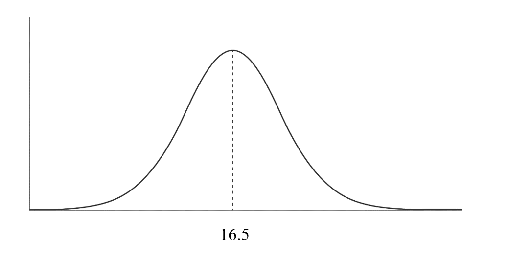
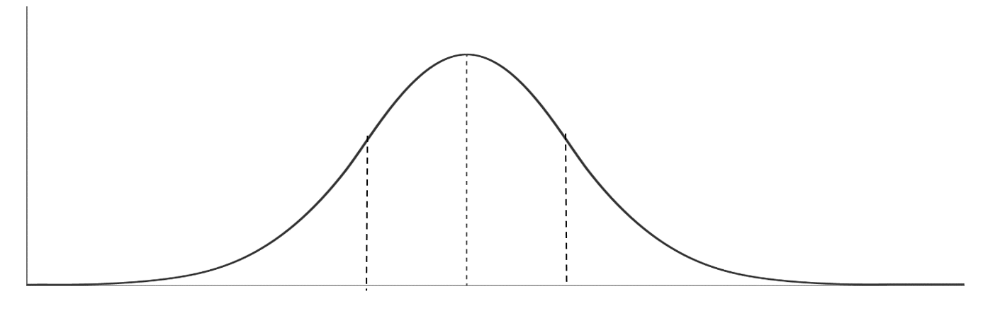
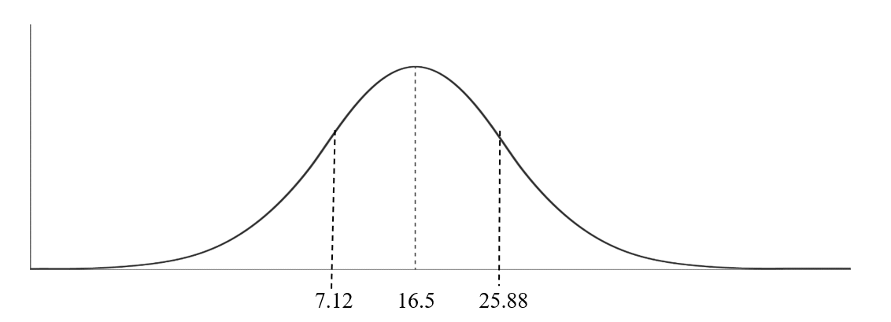

This quip by the late Alabama Football coach Bear Bryant has woven its way into numberless sports narratives. Listen to any sports talk show for long enough, and I can nearly guarantee you will hear the last three words of this quote at some point in the broadcast. Especially during playoff time. I leave the term “sports talk show” ambiguous on purpose, because even though Bryant was a football coach, his words have been transcribed onto the bibles of all sports.
It's a succinct and easily digestible message. It strikes a chord with us because of how we interpret success on each side of the ball. Broadcasters will call a great defensive player rugged and gritty, while dubbing a great offensive player effortless and smooth. Defensive units are highlighted for their tenacity. Offensive units are lauded for their showmanship. This is how we interpret success in all sports, and it helps ease the cognitive dissonance created by Bryant’s quote.
We like to believe that defensive players are gritty, the same as we like to believe that good things come to those who work hardest for them. We associate defense with grit and fatigue, and offense with elation and fluidity. This is why Bryant’s message about defense winning championships is still so salient in our minds decades after he first said it. Defenses work harder; thus, a great defense is what wins you a championship.
If I was trying to build a blog based off nit-picking miniscule inaccuracies, I could point to the 2006 Colts, the 2007 Giants, the 2009 Saints, the 2011 Giants, or the 2022 Chiefs as Super Bowl Champions with blatantly sub-par defenses. But I’m trying to build a brand of statistical rigor, not eyeball tests and hunches. And the first step in testing whether defenses win championships is the definition of what makes a defense great vs. merely good.
There are 32 teams in the NFL. If you were to randomly rank them on any subject, the 16th ranked team would be slightly above average, and the 17th ranked team would be slightly below average. Being above average leads to the distinction of being considered “good” in a relative sense of league performance. But we’re trying to figure out what makes a defense great vs. good. Surely a defense ranked 14th or 15th in the league can’t be called great. To decide where to draw the line “great vs. good”, we turn to something you learned in your high school statistics class, Normal Distribution.
Also known as the Bell Curve, a normal distribution is a statistical concept that shows datapoints symmetrically spread out across a graph.

In the above example, 50% of the datapoints are to the left of the dotted line, and 50% of the datapoints are to the right of the dotted line. Because there is no perfect middle of NFL teams, we have 16.5 as the X-axis value for the midpoint. This becomes more interesting as we add more bisecting lines.

In a normal distribution, these lines are called standard deviations. A standard deviation measures how dispersed data is, relative to the mean. It is the amount of variability in data. The dotted line to the left of the midpoint indicates one standard deviation above average, and the dotted line to the right signifies one standard deviation below average. We are able to plot NFL teams on a normal distribution because they are perfectly assigned values between 1 and 32.
I won’t go into detail on the calculation of the standard deviation for NFL rankings, but the online calculator told me that for a dataset ranging between 1 and 32, the standard deviation is 9.38. Plotting one standard deviation above and below my average of 16.5 gives me the following normal distribution.

Every team below 7.12 is one standard deviation above average, while every team above 25.88 is one standard deviation below average. Obviously, teams are given whole number rankings, so for all intents and purposes, it can be said that teams ranked 1-7 are one standard deviation above average, and teams ranked 26-32 are one standard deviation below average.
Now comes the beauty of the bell curve. The normal distribution, also known as perfectly normal distribution, can be broken into percentages. We’ve already gone over the fact that 50% of the data lies to one side of the midpoint. Given this fact, coupled with our newly drawn standard deviations, our curve begins to look like this.

Ignore the fact that the x-axis has Greek letters on it for just a minute and focus on the percentages within the bell curve. A total of 68% of the data lies within one standard deviation of the median. 95% of the data falls within 2 standard deviations, and 99.7% of the data falls within 3 standard deviations. This is known as the 68-95-99.7 rule in statistics and is crucial to our definition of a great defense.
If you add all these percentages up, you find that roughly 84% of the data falls behind one standard deviation of the mean. 16% of 32 is roughly 5 teams, meaning our ruling of teams ranked 1-7 being considered “great” is a valid assessment.
The definition of great has now been standardized, meaning we can finally rigorously test Bear Bryant’s hypothesis that defense wins championships. The first step in doing so is determining how we rank each defensive unit. What makes a defense the 3rd best in the league, vs. 4th best? Is it points against? Yards allowed? Turnover rate?
Luckily for me, I don’t have to be the governing body on what rank a defense should receive. Football Outsiders has published data on every NFL’s team Defense-adjusted Value Over Average (DVOA) going all the way back to the 1981 season. DVOA has been called the holy grail of football metrics, because of the exhaustive list of variables factored into its final product. I have used this statistic as the rankings system for this project, as is common practice in statistical analyses regarding professional football.
I downloaded data from Football Outsiders website for every team, stretching back to the 1998 season. I compiled both Offensive DVOA rankings as well as Defensive DVOA rankings for every team in an excel spreadsheet, making sure to note which teams were Super Bowl Champions. Utilizing our definition of great as being one standard deviation above average, or ranked 1-7, I conclude that 52% of teams which won the Super Bowl had a great defense, and 64% of champions had a great offense.
Preliminary analysis rejects Bryant’s hypothesis that defense is more vital to winning championships compared to offenses. But could the inverse be true? Is it a great offense that’s needed to win the Super Bowl?
To test this theory, I imported my excel file to the statistical software app, STATA. I should mention that this excel file, as well as the code I wrote in STATA can be found at the bottom of this article. Once imported, I created dummy variables which denoted whether or not a team won the Super Bowl, as well as dummy variables for having a great defense or offense.
All regressions performed in STATA show that having a great offense, or great defense, was a statistically significant positive predictor of winning a Super Bowl. However, regressions weren’t able to determine that one significance is more significant than the other. In other words, I can’t say that having a great offense is more important to winning a championship than having a great defense.
In any case, all analyses show that we cannot definitively conclude that having a great defense is more important than having a great offense, when it comes to winning championships, so this myth has been debunked. Bear Bryant was wrong when he said “Offense sells tickets, but defense wins championships.”